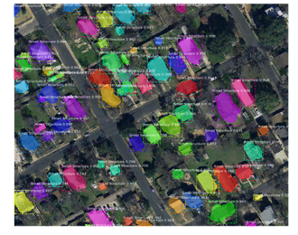
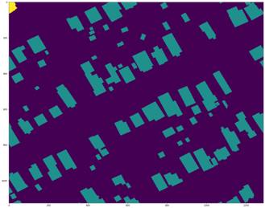
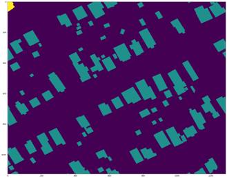
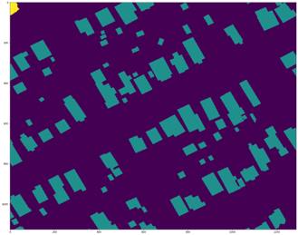

Geospatial analysis is the process of manipulating geographic data as it pertains to terrain, topology, geomorphology, temporal locality, and history, and applying such data against a geographic model to infer upon or better understand an objective reality. Applications of geospatial analysis include, but are not limited to, land use and storm water management, emissions assessment of municipal landfills, preconstruction planning of new development with a focus on graceful spatial integration. Given the broad spectrum of use cases and needs for such a form of analysis, it is imperative that the acquisition and logical ordering of geographic data be streamlined and economical for all entities in need of such data. We have addressed the following aspects of this challenge: 1. Transform ArcGIS annotations into object detection compatible training format 2. Deep learning framework for detecting objects in overhead imagery 3. Object Identification on edge: MaskRCNN on NVIDIA Jetson TX2

Give us your data!
Now more than ever, we are looking to test our algorithm on various real world data.
 
